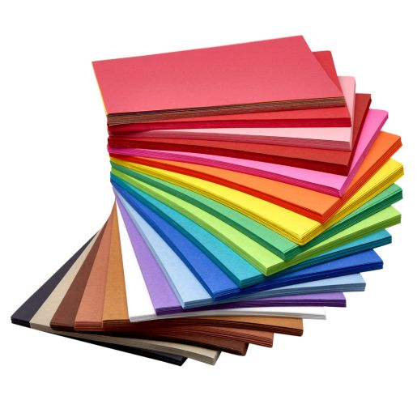
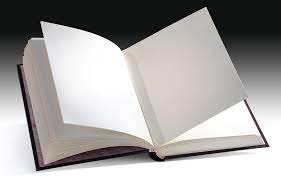

There are many classes of paper like
If you were to ask anyone for a piece of paper, you’re going to get printer paper. Printer paper has a lot more ways to effectively use it when compared to other types of paper and is incredibly widely spread and used.
Construction paper is basically stronger printer paper used to make constructions of different items, some might say that cardboard is more useful, but cardboard is a combination of heavy papers and therefore not a singular paper. Construction paper, on the other hand, is one type of paper and is incredibly widespread usually coming in almost every color but white, and is usually used when doing construction projects
Book Paper or Page paper is incredibly common spread and while most people do not use it to write on it is still read and used and incredible amount being found almost literally everywhere in the hundreds at a time
